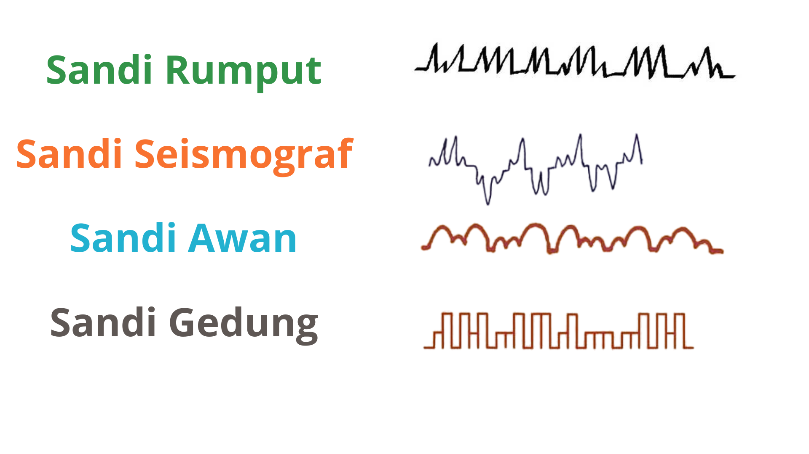

Pohon Morse
Learning Corner #1
Tahukah kamu? Sandi Morse tidak harus dihafal satu per satu. Ada cara yang jauh lebih mudah, yaitu menggunakan Pohon Morse. Cukup ingat bahwa titik berarti ke kiri dan garis berarti ke kanan!
Rumus Pohon Morse
Keterangan:
- Titik (·) = Kiri
- Garis (–) = Kanan

Contoh Soal
S = ···
A = ·–
H = ····
A = ·–
B = –···
A = ·–
T = –
R = ·–·
U = ··–
M = ––
A = ·–
H = ····
P = ·––·
O = –––
H = ····
O = –––
N = –·
A = ·–
R = ·–·
A = ·–
Latihan
- TEMAN BAIK
- BUNGA MAWAR
- TONGKAT EMAS
Coba ubah kata-kata di atas menjadi sandi Morse menggunakan Pohon Morse!
Variasi Sandi Morse
Seiring waktu, sandi Morse tidak hanya digunakan dalam bentuk titik dan garis. Untuk mempermudah pembelajaran dan membuat kegiatan komunikasi rahasia menjadi lebih menarik, muncul berbagai variasi sandi yang terinspirasi dari sandi Morse. Beberapa variasi tersebut tetap menggunakan pola yang sama seperti sandi Morse, tetapi mengganti simbol titik dan garis dengan bentuk lain yang lebih mudah dikenali. Meskipun tampilannya berbeda, cara membacanya tetap mengacu pada pola huruf dalam sandi Morse. Karena itu, jika kamu sudah memahami Pohon Morse, mempelajari variasi sandi lainnya akan menjadi jauh lebih mudah.

Catatan Tambahan
Sejarah Singkat
Sandi Morse diciptakan oleh Samuel Morse bersama Alfred Vail pada tahun 1830-an untuk mengirim pesan melalui telegraf. Sistem ini menggunakan kombinasi titik dan garis untuk mewakili huruf dan angka.
Digunakan Untuk Apa?
- Komunikasi telegraf, Militer, & Pelayaran
- Penerbangan, Pramuka, & Sinyal darurat
Kode Penting
- SOS = ··· ––– ··· → Minta pertolongan
- K = –·– → Silakan kirim pesan
- R = ·–· → Pesan diterima
- SK = ···–·– → Akhir komunikasi
- 73 / 88 → Salam terbaik / Salam & kasih sayang